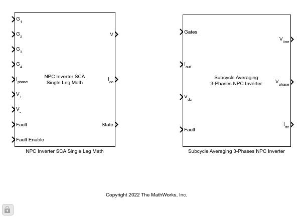

Subcycle Averaging Three-Level NPC Inverter Library
Introduction
This library contains the HDL compatible Simulink model for three-level NPC inverter. To improve the accuracy of the simulation result, the subcycle averaging technique is applied to the input PWM signals, in which PWM signals are averaged over one simulation step. This model can be used to validate design in normal mode simulation and to synthesize for FPGA accelerated real-time simulation.
Assumptions
1. The voltage at the mid-point is assumed to be zero.
2. The voltage of each leg can switch between 3 voltage levels, i.e., 0.5 input DC voltage, 0, 0.5 input DC volage.
Open Subcycle Averaging Three-Level NPC Inverter Library
Subcycle averaging NPC inverter library
Ports
Input
| Input | Dimensions | DataType | Description |
| Gates | 1x12 | boolean | Input PWM signals |
| Iout | 1x3 | single | Power source current |
| Vdc | 1x1 | single | Power source voltage |
| Fault | 1x1 | uint32 | Fault flag |
Output
| Output | Dimensions | DataType | Description |
| Vline | 1x3 | single | Output line voltages |
| Vphase | 1x3 | single | Output phase voltages |
| Idc | 1x3 | single | Output DC currents |
Parameters
| Parameter | Default value | Description |
| IGBT Resistance (Ohms) | 0.1 | IGBT internal resistance |
| IGBT Forward Voltage (V) | 0.8 | The forward voltage of the IGBT device |
| Diode Resistance (Ohms) | 0.2 | Diode internal resistance |
| Diode Forward Voltage (V) | 0.6 | The forward voltage of the diode device |
| Snubber resistance (Ohms) | 100000 | Snubber resistance |
| Model Time Step (s) | 1e-6 | Time step at which model running on CPU is sampled |
| FPGA Time Step (s) | 5e-9 | Time step at which model running on FPGA is sampled |
Reference
Modelling and Control of Grid-Tied NPC Inverters by Jorge Guzman Guemez.
State-Space approach for Modeling and Control of a Single-Phase Three-Level NPC Inverter with SVPWM by Jorge Guzman-Guemez, etc.